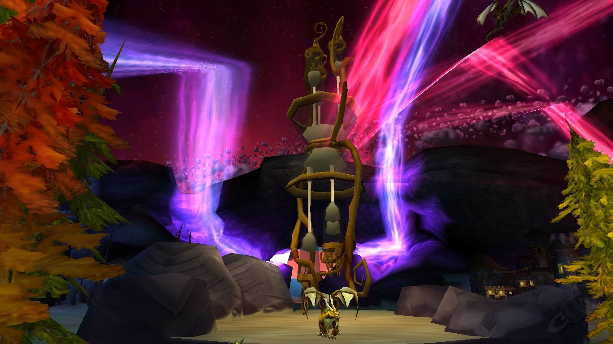
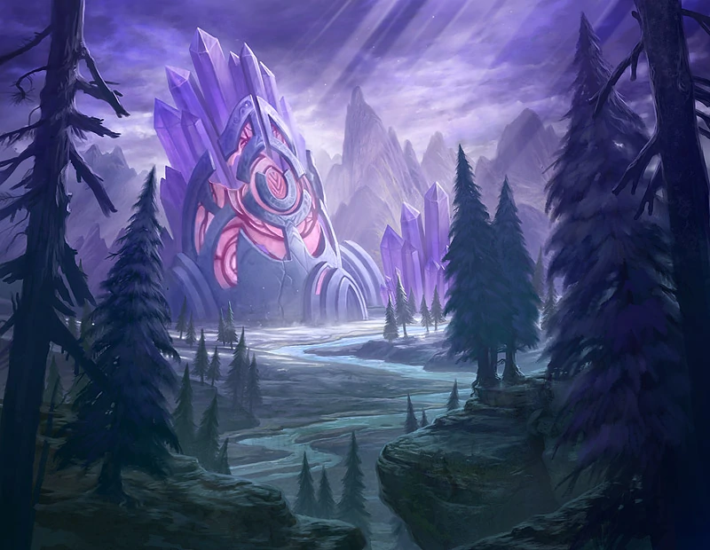
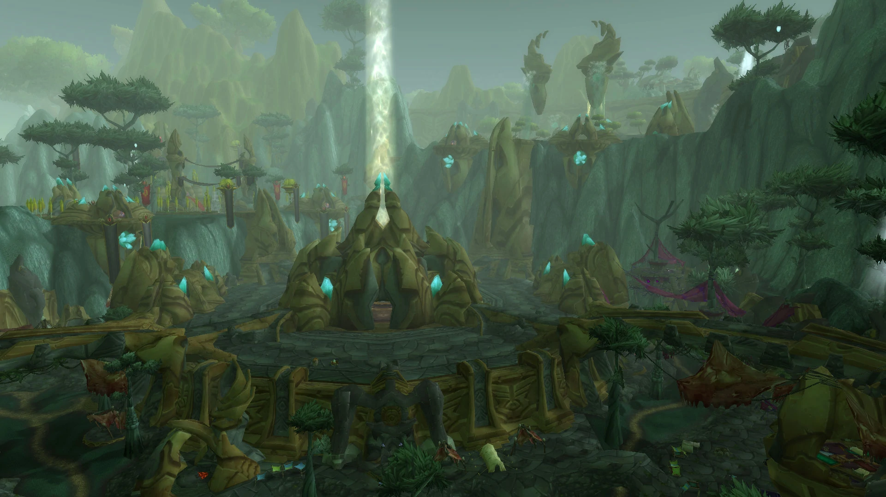
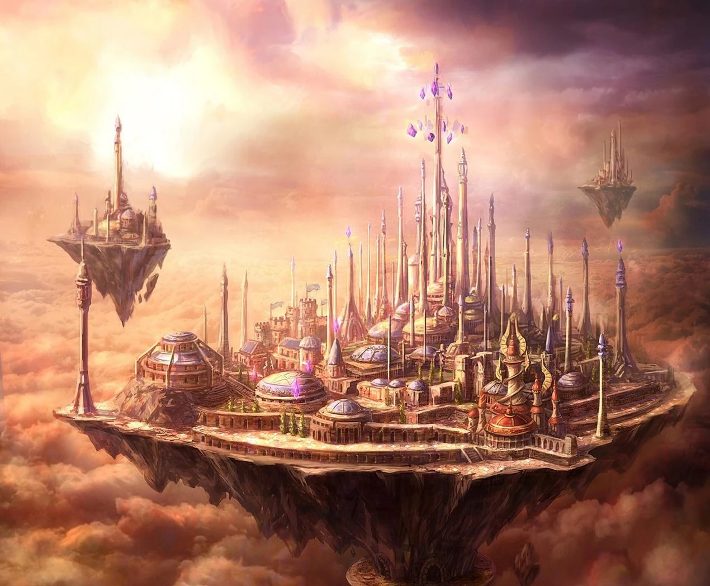
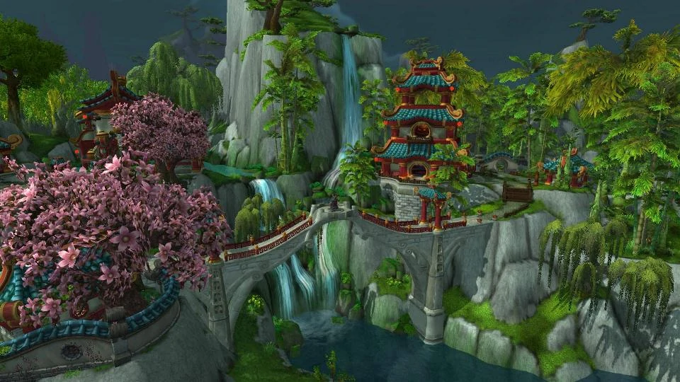
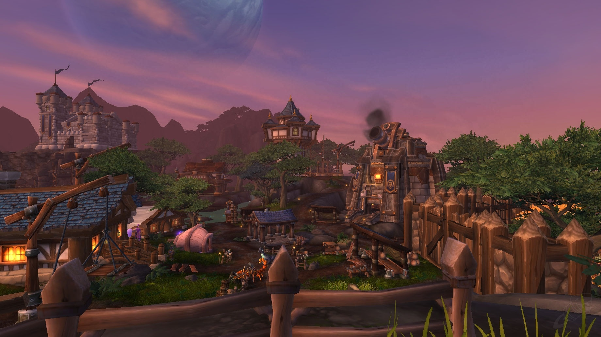
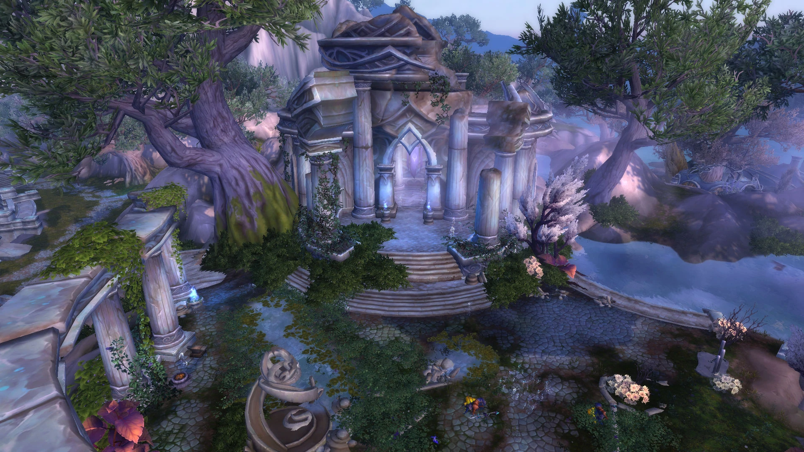
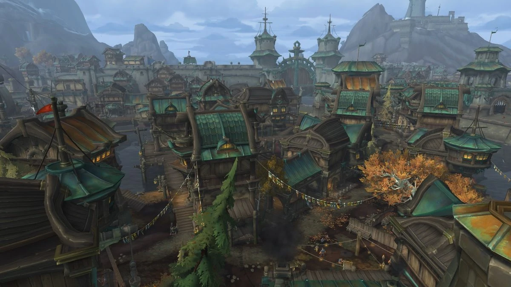
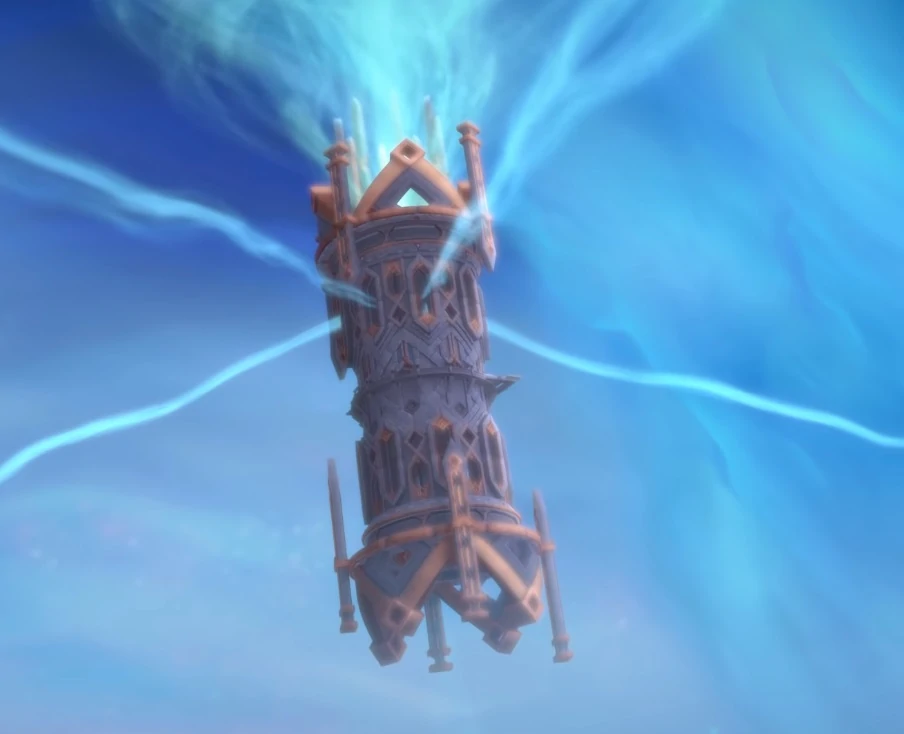

The Way of the Travel
Travelling in Stormwind can be an exciting experience, especially when moving from portals to ships. Stormwind is a bustling city that offers numerous portals and ships to various destinations, making it easy for travelers to explore the realm. Portals are an excellent way to quickly move from one location to another, while ships offer a more scenic route for those who prefer to enjoy the journey. However, when travelling during a storm, it can be quite challenging, with the strong winds and heavy rain making it difficult to navigate. Nonetheless, with the proper preparation and caution, travelers can safely reach their destination and enjoy all that Stormwind has to offer.
Portals
Caverns of Time, Tanaris
Place where time itself stops
The Exodar
The great city and saviour of draenai
Shattrath City
Outlands last home and hope
Dalaran
Home to mages known as the flying city
Paw'Don Village, The Jade Forest
Home to the Pandas, masters of martial arts
Stormshield, Ashran
City on another planet in another time
The Crumbled Palace, Azsuna
One of the first places struck by Legion
Boralus, Tiragarde Sound
Alliances main sea force and the greatest
Oribos, The Shadowlands
City where souls of beings come to be judged
